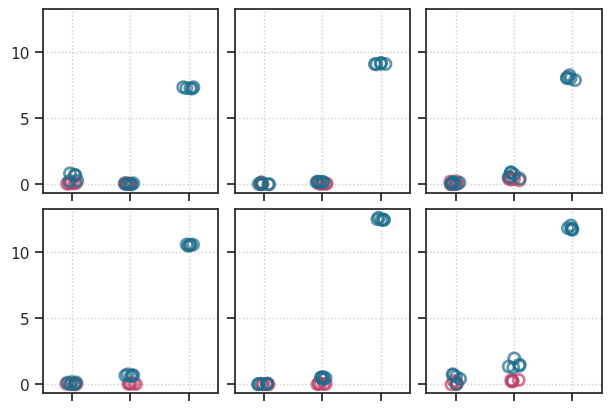

Fig: supp#
Motivation: All supp figs. Device = cuda:1
Show code cell source
# HIDE CODE
import os, sys
from IPython.display import display
# tmp & extras dir
git_dir = os.path.join(os.environ['HOME'], 'Dropbox/git')
extras_dir = os.path.join(git_dir, 'jb-vae/_extras')
fig_base_dir = os.path.join(git_dir, 'jb-vae/figs')
tmp_dir = os.path.join(git_dir, 'jb-vae/tmp')
# GitHub
sys.path.insert(0, os.path.join(git_dir, '_PoissonVAE'))
from analysis.eval import sparse_score
from figures.fighelper import *
from vae.train_vae import *
# warnings, tqdm, & style
warnings.filterwarnings('ignore', category=DeprecationWarning)
warnings.filterwarnings('ignore', category=FutureWarning)
warnings.filterwarnings('ignore', category=UserWarning)
from rich.jupyter import print
%matplotlib inline
set_style()
Fig save dir#
from figures.imgs import plot_weights
fig_dir = pjoin(fig_base_dir, 'nips_may22')
os.makedirs(fig_dir, exist_ok=True)
print(os.listdir(fig_dir))
kws_fig = {
'transparent': True,
'bbox_inches': 'tight',
'dpi': 300,
}
[ 'phi_conv_categorical.png', 'rate_dist_lca.pdf', 'phi_lca.png', 'phi_conv_laplace.png', 'phi_conv_poisson.png', 'phi_lin_laplace.png', 'phi_fista.png', 'phi_conv_gaussian.png', 'phi_lin_poisson.png', 'recons_samples', 'phi_lin_categorical.png', 'nelbo_point.pdf', 'phi_lin_gaussian.png', 'phi_ista.png', 'rate_dist_vae.pdf' ]
Device#
device_idx = 1
device = f'cuda:{device_idx}'
from analysis.final import sort_fits, analyze_fits, add_nelbo_diff
from figures.table import table_entry_loss
from figures.point import nelbo_point
from analysis.stats import ttest
root = add_home('Dropbox/chkpts/PoissonVAE')
Recon/sample MNIST#
def accept_fn(name):
archi = name.split('-')[1]
accept = (
archi == '<conv+b|conv+b>'
and 'MNIST' in name
)
return accept
fits, fits_st, fits_etc = sort_fits()
fits_nonlin = sorted(filter(accept_fn, fits))
print(len(fits_nonlin))
100
fig_dir_recon_sample = pjoin(fig_dir, 'recons_samples')
os.listdir(fig_dir_recon_sample)
[]
trainers = {}
for name in fits_nonlin:
tr, _ = load_quick(
pjoin(root, name),
lite=True,
device=device,
verbose=False,
)
if tr.model.cfg.type == 'categorical':
skip = tr.model.cfg.n_categories != 10
else:
skip = tr.model.cfg.n_latents != 10
if skip:
continue
trainers[name] = tr
print(tr.model.cfg.name())
t = model2temp(tr.model.cfg.type)
fig, ax = tr.show_recon(t, cmap='Greys')
fig.savefig(pjoin(fig_dir_recon_sample, f"recon_{tr.model.cfg.name()}.png"))
fig, ax = tr.show_samples(t, cmap='Greys')
fig.savefig(pjoin(fig_dir_recon_sample, f"sample_{tr.model.cfg.name()}.png"))
categorical-10_MNIST_z-1_k-32_<conv+b|conv+b>_seed-1
categorical-10_MNIST_z-1_k-32_<conv+b|conv+b>_seed-2
categorical-10_MNIST_z-1_k-32_<conv+b|conv+b>_seed-3
categorical-10_MNIST_z-1_k-32_<conv+b|conv+b>_seed-4
categorical-10_MNIST_z-1_k-32_<conv+b|conv+b>_seed-5
gaussian_MNIST_z-10_k-32_<conv+b|conv+b>_seed-1
gaussian_MNIST_z-10_k-32_<conv+b|conv+b>_seed-2
gaussian_MNIST_z-10_k-32_<conv+b|conv+b>_seed-3
gaussian_MNIST_z-10_k-32_<conv+b|conv+b>_seed-4
gaussian_MNIST_z-10_k-32_<conv+b|conv+b>_seed-5
laplace_MNIST_z-10_k-32_<conv+b|conv+b>_seed-1
laplace_MNIST_z-10_k-32_<conv+b|conv+b>_seed-2
laplace_MNIST_z-10_k-32_<conv+b|conv+b>_seed-3
laplace_MNIST_z-10_k-32_<conv+b|conv+b>_seed-4
laplace_MNIST_z-10_k-32_<conv+b|conv+b>_seed-5
poisson_uniform_c(-2)_MNIST_z-10_k-32_fp_<conv+b|conv+b>_seed-1
poisson_uniform_c(-2)_MNIST_z-10_k-32_fp_<conv+b|conv+b>_seed-2
poisson_uniform_c(-2)_MNIST_z-10_k-32_fp_<conv+b|conv+b>_seed-3
poisson_uniform_c(-2)_MNIST_z-10_k-32_fp_<conv+b|conv+b>_seed-4

poisson_uniform_c(-2)_MNIST_z-10_k-32_fp_<conv+b|conv+b>_seed-5
EX/MC/ST#
df = pjoin(tmp_dir, 'df_main.df')
df = pd.read_pickle(df)
df = add_nelbo_diff(df)
df.shape
(150, 9)
fig, axes = nelbo_point(df, scale=2)
fig.savefig(pjoin(fig_dir, 'nelbo_point.pdf'), **kws_fig)

Dead neuron: KL#
Show code cell source
# HIDE CODE
def detect_dead_neurons(tr: TrainerVAE):
dead_thres = {
'poisson': 0.0082,
'gaussian': 0.09,
'laplace': 0.08,
}
data, loss, etc = tr.validate()
if tr.model.cfg.type == 'categorical':
thres = None
dead = tr.model.find_dead_neurons(1)
else:
thres = dead_thres.get(tr.model.cfg.type)
dead = loss['kl_diag'] < thres
return data, loss, etc, thres, dead.astype(bool)
models2load = {
'gaussian': 'gaussian-<lin|lin>-DOVES-mc_mach-5_(2024_05_14,04:09)',
'poisson': 'poisson-<lin|lin>-DOVES-mc_mach-5_(2024_05_14,04:46)',
'laplace': 'laplace-<lin|lin>-DOVES-mc_mach-5_(2024_05_14,04:12)',
'categorical': 'categorical-<lin|lin>-DOVES-mc_mach-5_(2024_05_14,04:04)',
}
models2load = {k: v.replace('/', ':') for k, v in models2load.items()}
trainers = {}
for name, load_path in models2load.items():
try:
trainers[name], _ = load_quick(
pjoin(root, load_path),
lite=True,
device=device,
verbose=True,
)
except FileNotFoundError:
continue
# params: 394.2 K
# params: 262.7 K
# params: 394.2 K
# params: 262.7 K
bins = {
'poisson': np.linspace(0, 111 / 1000, 112),
'gaussian': np.linspace(0, 80 / 100, 81),
'laplace': np.linspace(0, 80 / 100, 81),
}
pal = get_palette()[0]
fig, axes = create_figure(2, 2, (10, 5), sharey='all')
for idx, (name, tr) in enumerate(trainers.items()):
color = pal[name]
data, loss, etc, thres, dead = detect_dead_neurons(tr)
ax = axes.flat[idx]
if name == 'categorical':
norms = tonp(torch.linalg.vector_norm(
tr.model.fc_dec.weight.data, dim=0))
thres = 4.435
dead = norms < thres
sns.histplot(norms[dead], bins=np.linspace(4.2, 7.1, 101), color='k', label='dead', element='step', ax=ax)
sns.histplot(norms[~dead], bins=np.linspace(4.2, 7.1, 101), color=color, label='alive', element='step', ax=ax)
else:
sns.histplot(loss['kl_diag'][dead], bins=bins[name], color='k', label='dead', element='step', ax=ax)
sns.histplot(loss['kl_diag'][~dead], bins=bins[name], color=color, label='alive', element='step', ax=ax)
ax.axvline(thres, color='k', ls='--', lw=1.2)
ax.locator_params(axis='x', nbins=11)
ax.set_title(f"{name.capitalize()} (# dead neurons: {dead.sum()})")
ax.set_yscale('log')
axes[0, 1].set(ylabel='')
axes[1, 1].set(ylabel='')
add_legend(axes)
plt.show()
fig.savefig(pjoin(fig_dir, 'dead_kl_gap.pdf'), **kws_fig)